锅炉除尘器
进入分类 →


布袋除尘器
进入分类 →


ZC型机械回转反吹扁袋除尘器
可广泛用于机械、铸造、矿山、冶炼、建材、粮食化工等许多部门。用户选用应注意对温度高，浓度大，颗粒细的粉尘应选用A型，反之用B型为宜，如浓度大于15克/米...
查看详情 →
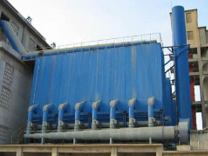
LFEF型高温玻纤袋除尘器
LFEF型高温玻纤袋除尘器是针对高温烟气除尘开发研制的新产品，该机采用微机PLC控制，分室反吹，定时、定阻清灰，温度检测显示等措施，使玻纤 布袋除尘器 在高温.……
查看详情 →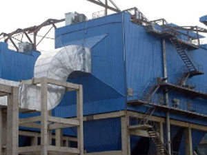
单机除尘器
进入分类 →


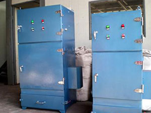
PL型单机布袋除尘器
PL型单机 布袋除尘器 经济实用;结构简单紧凑，安装容易，维修方便主要用于库顶、库底、仓顶及各种输送机等排放和扬尘点收尘，该机采用涤纶除尘布袋，入口温度<1..……
查看详情 →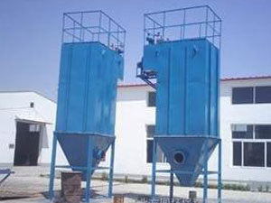
XMC型脉冲单机除尘器
公司是XMC型脉冲单机除尘器厂家，XMC型脉冲单机除尘器的结构有其特点，所以提高了收尘效率，适应能力，延长了滤袋的使用寿命，XMC型脉冲单机除尘器经过多年生产实……
查看详情 →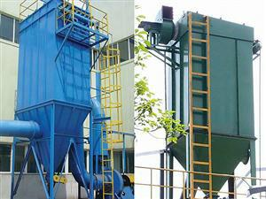
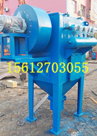

木工除尘器
进入分类 →

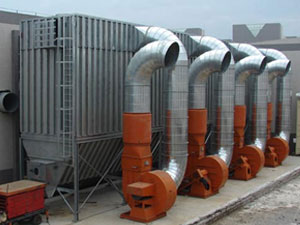


木器打磨车间专用布袋除尘器
公司 生产木器厂 布袋除尘器，木器打磨车间布袋除尘器，木器打磨车间专用布袋除尘器。除尘器除尘工作原理介绍：木工设备在生产中产生的粉尘被除尘系统吸尘风管收...
查看详情 →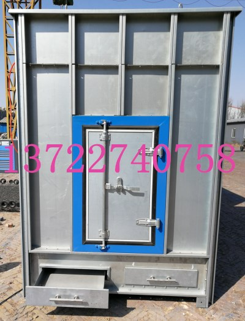
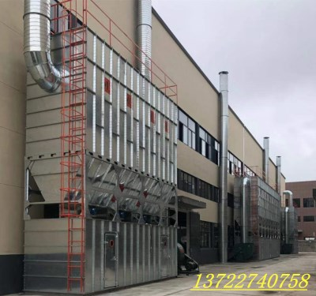
木工布袋除尘器，木工布袋除尘器图片，木工布袋除尘器…
木工 布袋除尘器，木工布袋除尘器图片，木工布袋除尘器优点，拼接式木工布袋除尘器，木工布袋除尘器适用于实木刨花，人造板颗粒，纤维的集尘， 木工除尘器 采用防静电装……
查看详情 →脱硫除尘器
进入分类 →


旋风除尘器
进入分类 →


除尘布袋及配件
进入分类 →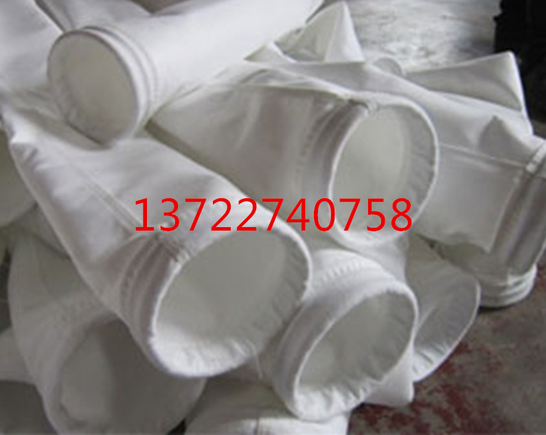


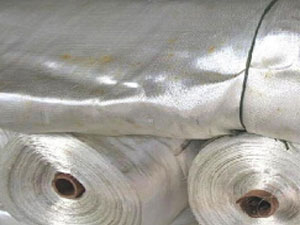

耐高温METMAX(美塔斯)针刺过滤毡(覆膜)
耐高温METMAX(美塔斯)针刺过滤毡(覆膜)是一个耐高温新品种，具有耐高温、高强度、抗酸碱腐蚀、耐磨、抗折等特点;并有适合150-200°C、250-300°……
查看详情 →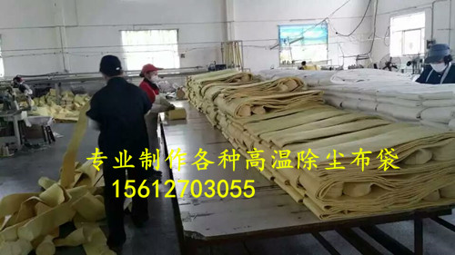
P84耐高温除尘布袋
P84耐高温除尘布袋，适用于燃煤锅炉、液床锅炉、垃圾焚烧、沥青厂、水泥厂、废弃物焚化炉等。P84耐高温除尘布袋耐酸碱、耐高温适用于环境恶略的工况。电话：15..……
查看详情 →
说明：本页按原站七大分类汇总已采集的产品；每个分类页有 6–8 个产品。原站产品中心另有白灰窑除尘器、滤筒除尘器、静电除尘器、除尘骨架、电磁脉冲阀等更多分类，未在本次采集范围内。